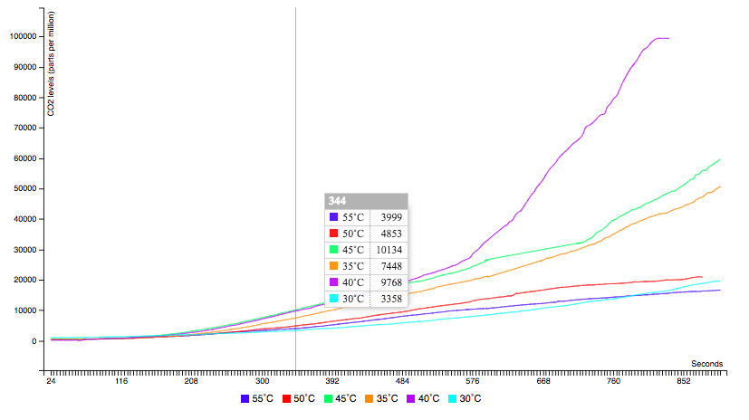

For the Speaker Project, we created a speaker using resistors, transistors, capacitors, inductors, LEDs, speakers, tweeters, and wires. We prototyped with MDF, cardstock and used breadboards in addition to arduinos.
1 / 6

2 / 6

For the Wireless Project, we had to design a device that communicates over one of the following protocols: Radiofrequency, Wifi, Bluetooth, or SMS. Using a Photon Particle and Adafruit, I decided to make a screen that displayed the weather, temperature and MUNI (public transportation) time for my stop utilizing weather and MUNI API's. I lasercutted the enclosure out of acrylic.
3 / 6

For the Solar Project, we had to design a small portable solar device and understand the requirements for a basic solar charging system. I created a charging station- the enclosure was laser cut 1/8 MDF.
4 / 6

For the Dava Visualization Project, my group was able to combine our chemistry project with our circuits project. We created an interactive graph that would plot out the results of our chemistry experiment on the ideal temperature for yeast growth.
5 / 6

For the Audio reactive visualizer Project, I created a audio reactive neopixel visualizer. create an audio reactive visualizer. Using
Arduino and a neopixel, I changed the code so that when a certain frequency was played, the LED columns would peak up.
6 / 6
Video of my audio visualizer running.